Research Community Platform · Survey Report · AI Chatbot
Reporting System Migration
Researchers used to open the report, then export data to Excel. After two years of incremental migrations and upgrades, most stopped needing to leave.
Before
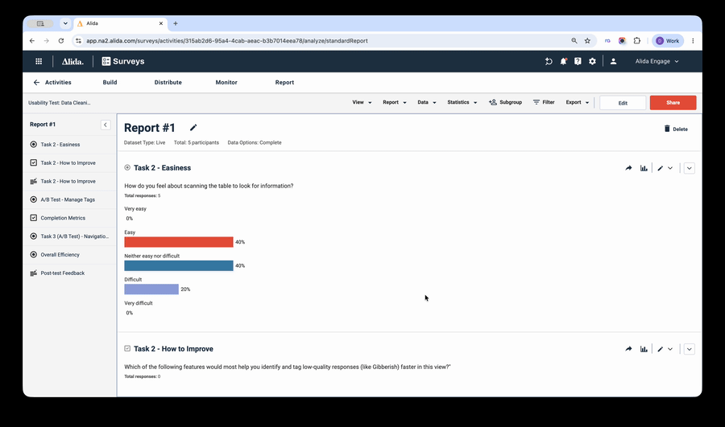
After
Same data, different product. Two years of incremental ships, one continuous experience.
Product
Research Community Platform
Area
Survey Report
Timeline
2024 – 2026 (2 years)
Role
Product Designer
Team
1 Designer · 1 PM · 8–10 Engineers
Tools
Figma, Pendo (tracking usage)
Problem
An outdated framework capped the legacy report, so researchers hit the ceiling fast and had to finish their analysis in Excel.
Approach
Framed the migration as a major product upgrade, leveraging user adoption signals to strategically time the legacy report's deprecation.
Result
Researchers now complete their analysis inside the report, making Excel exports the rare exception rather than the default.
Why It Matters
Researchers didn't just view reports, they used them to find the story inside thousands of responses. The legacy report stopped at "here's a chart;" anything harder (multi-level crosstabs, data cleaning, wave-over-wave trends) meant exporting to Excel and starting over. Meanwhile, the framework underneath was no longer extensible.
Migration wasn't a choice but the scope of it was. We set out to rebuild the reporting system not just to parity, but to give researchers the analysis power they actually needed inside the product.
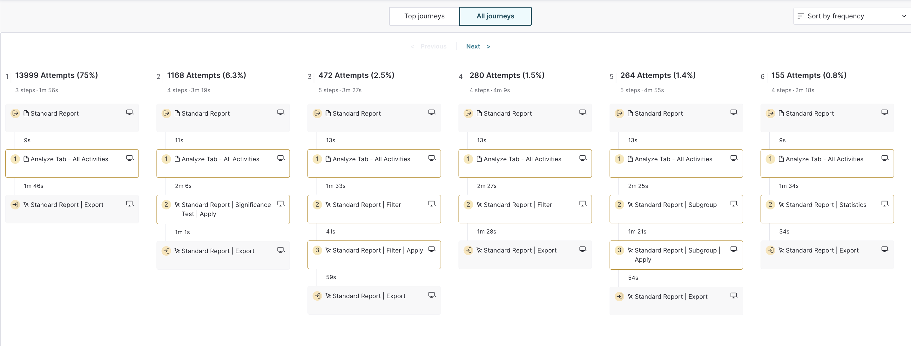
Pendo · Frequency of Export · Q1 2023
75% of users exported data within 2 minutes of opening a report — the product was a brief stop on the way to Excel.
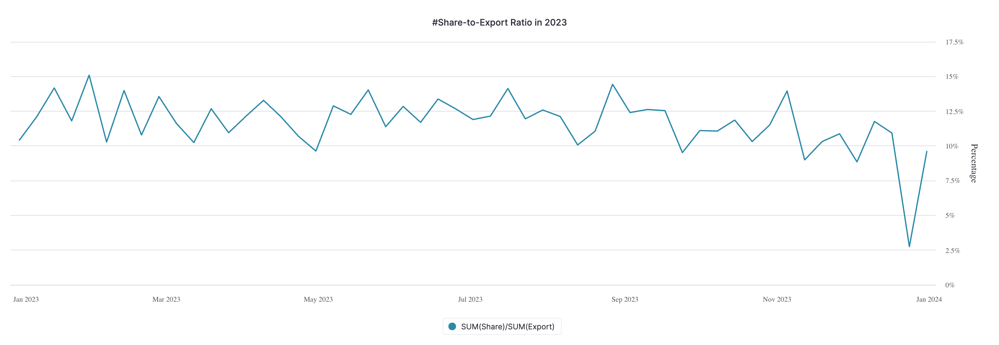
Pendo · Share-to-export ratio · Q1-Q4 2023
For every 100 accounts that exported a report, only 10–15 shared the in-product view — researchers had to rebuild their analysis in Excel before it could become a deliverable.
How We Killed the Excel Detour
2024
Full Crosstab Analysis, Right Inside the Report
~20%of report authors consistently use banners
Before
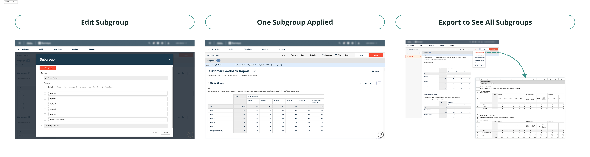
What was broken
No way to reorder: Once added, banners were stuck — new ones appended to the end with no way to drag or reorder.
No Live Preview: Users had to close and reopen the modal repeatedly just to see changes, or delete and recreate banners to fix the order.
Forced Excel Export: With 20–30 banners (200+ rows), seeing all banners at once was impossible in-product — cross-tabulation meant leaving for Excel.
After
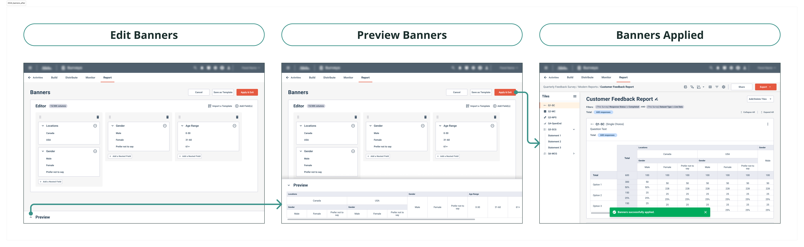
What improved
Drag-to-reorder editor: A full-page editor replaces the modal — banners can be dragged and reordered directly, no more deleting and re-adding to fix the order.
Live Preview: Edits show up instantly in an inline preview, no more closing and reopening to check your work.
In-Product Crosstab: All banners now render as crosstab columns inside the report — no Excel export needed to see 20–30 banners at once.
Recode Data Right Inside the Report
[CONFIRM][CONFIRM usage data label]
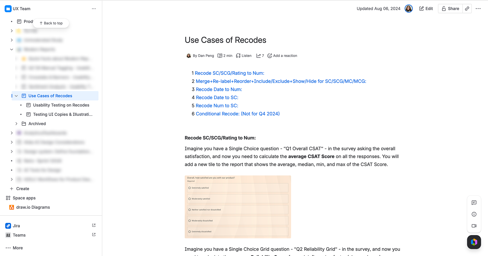
Process · Stakeholder Research
Talked with the PM and Customer Service team to map out recode use cases and shape the usability testing scenarios.
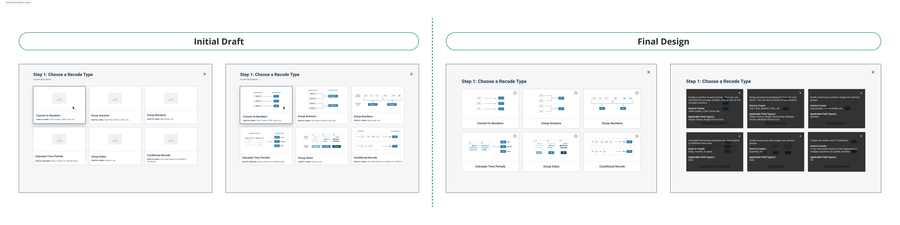
Final Design · Step 1 · Recode Type Picker
Simplified illustrations use letters only instead of full "Option A/B/C" labels. Descriptions live behind an info icon, keeping the picker scannable until users need more context.
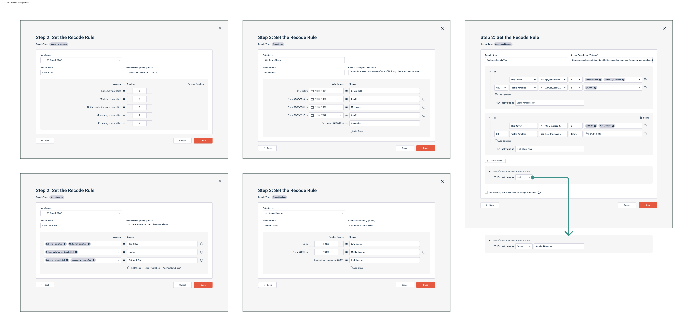
Final Design · Step 2 · Rule Configuration
Source at the top, output name & description below
Setup area: original values on the left map to recoded values on the right
Conditional recode adapts the layout for its condition logic
The new report hit 30% adoption within 2 months — then stalled. Researchers were creatures of habit, and without CSV, PPTX, or SPSS exports in the new system, there was no reason to make the switch.
Pendo · Reporting system adoption · End of 2024
2025
Usability Testing Reports, Built Around Data Levels
[CONFIRM][CONFIRM usage data label]
Three new tools — usability testing, card sort, and tree test — needed reports. The legacy framework couldn't support any of them. I started with usability testing, mapping out what data levels the report needed to cover before touching a single screen.
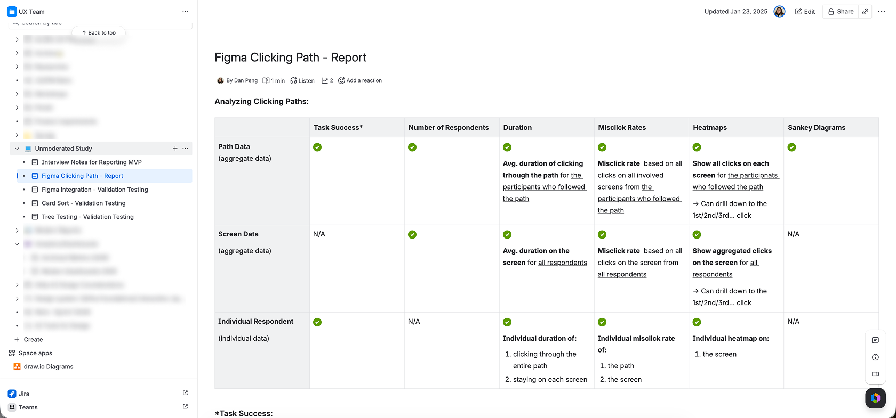
Process · Data-Level Scoping
Mapped every metric — task success, duration, misclicks, heatmaps, Sankey — to its data level: aggregate path, aggregate screen, or individual respondent. Aligned scope with the PM before any design work started.
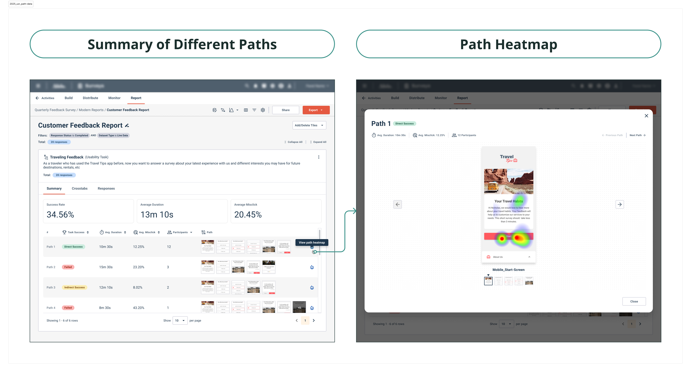
Final Design · Aggregate (Path) Data
Success rate, average duration, and a path heatmap show how all respondents moved through the task.
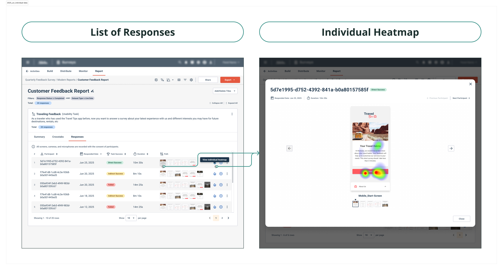
Final Design · Individual Respondent
Drill into a single respondent's path and heatmap — without leaving the report.
Reusing the Pattern: Card Sort & Tree Test
[CONFIRM][CONFIRM usage data label]
Two more tools, two different problems. Card sort needed brand-new reporting, built to fit the system's styling. Tree test was the opposite: its data was close enough to usability testing that the path pattern carried over almost unchanged.
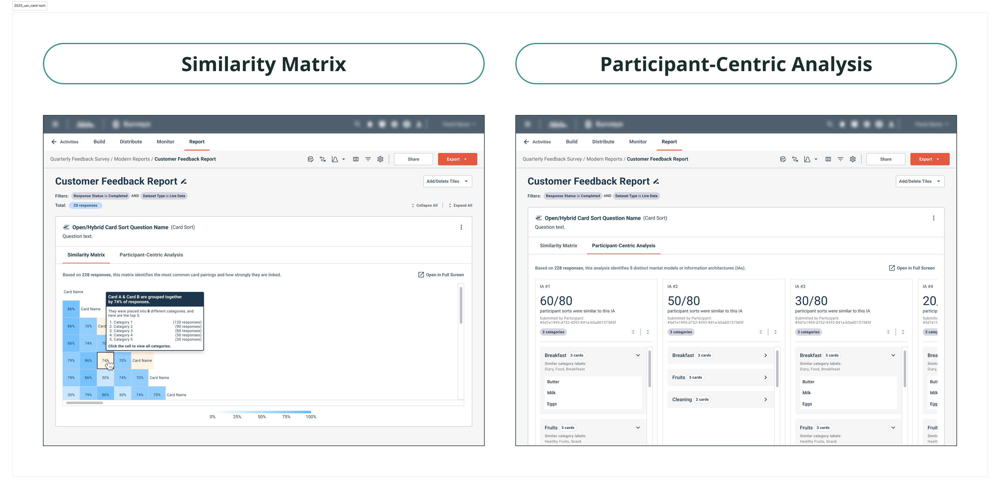
Final Design · Card Sort
New reporting built into the system's style: a similarity matrix showing how cards group across participants, plus a per-participant breakdown.
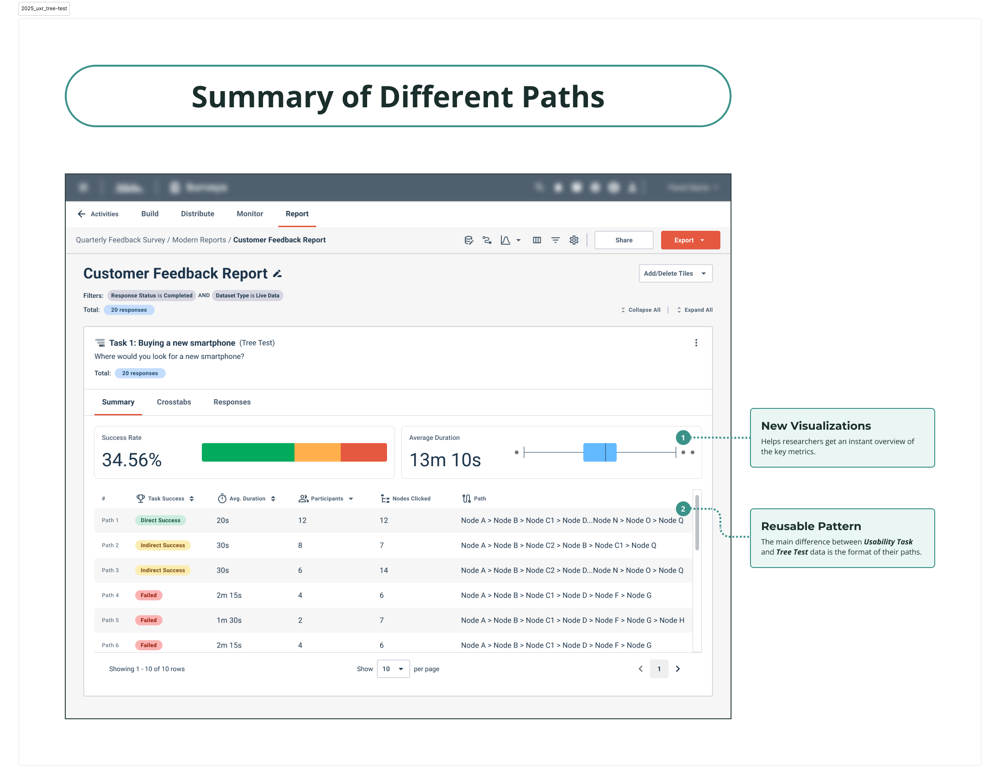
Final Design · Tree Test
The same path summary as usability testing, adapted for tree navigation. One pattern, two tools.
An AI Assistant for the AI-Era Detour
~25%of AI prompts ended in an insert, copy, or download within 3 months
At the peak of AI hype in 2025, researchers were pasting data into external tools for quick analysis. To keep researchers from leaving for external AI tools, I mapped the conversational flow and core components — giving engineering what they needed to ship an integrated AI assistant fast.
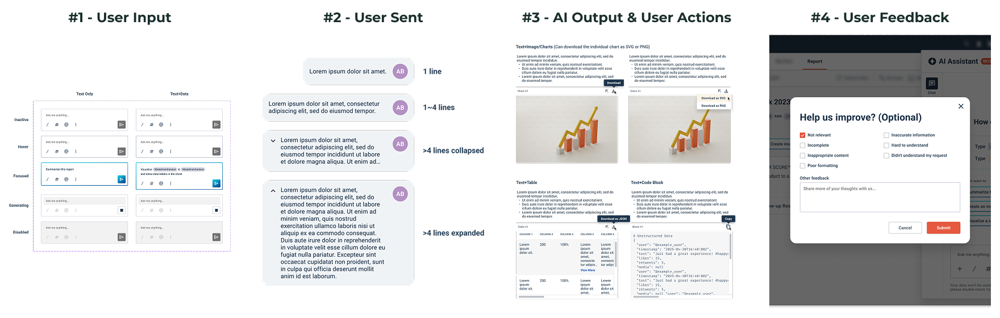
My Contribution · Basic Structure
Designed within the existing system so brand styles carried over without extra lift.
One challenge: the report wasn't built for responsive layout, so embedding the chat broke. I worked with engineering to launch it from the top bar instead, and added in-report nudges to surface it at the right moments.
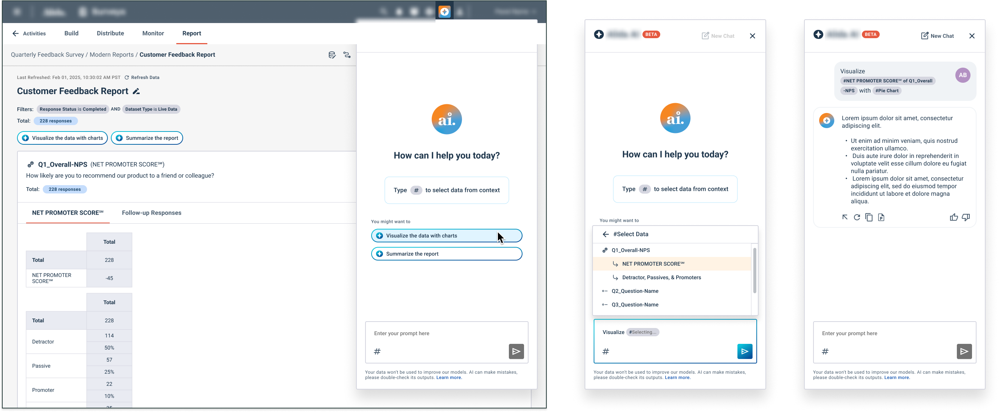
Final Design
Launches from the top bar, surfaced by in-report nudges at key moments. Outputs can be inserted into the report, copied, or downloaded.
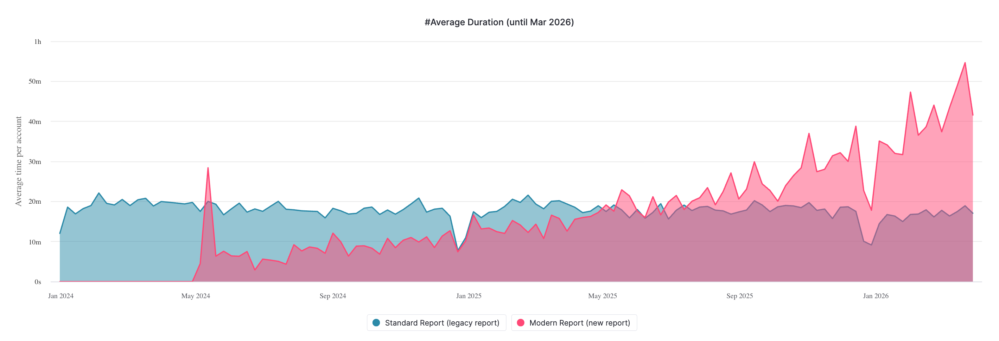
By May 2025, time spent in the new report caught up to legacy — then kept climbing. By year-end: ~30 min in the new report vs. ~20 min in legacy.
Pendo · Average duration per account · End of 2025